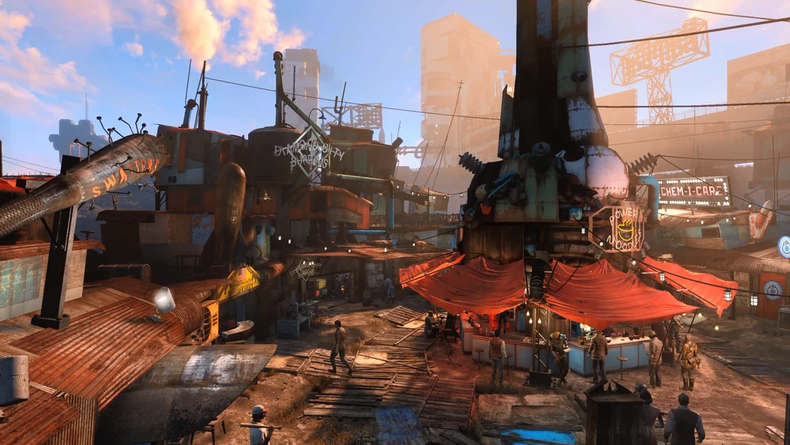
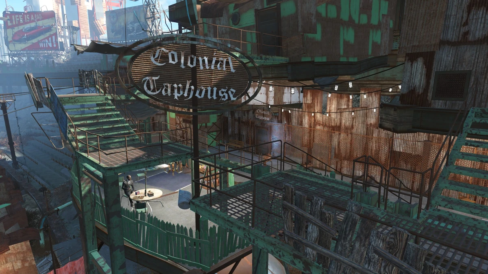

El Mercado Central
Ubicado en lo que antes era la cancha de béisbol. Es el corazón comercial de la ciudad donde los mercaderes venden de todo desde puestos hechos con chatarra.

Los puestos más famosos:
- Puesto de armaduras
- Boutique Vintage
- Venta de repuestos atómicos
Cantina "Lo de Lalo"
El bar social de la ciudad. Inaugró hace más de 70 años. Hay una rockola antigua que pasa música Swing/jazz de los años 50 y la gente se junta a tomar algo y escuchar novedades.

Bebidas y platos típicos:
- Gaseosa atómica
- Guiso del Yermo
- Agua filtrada pura